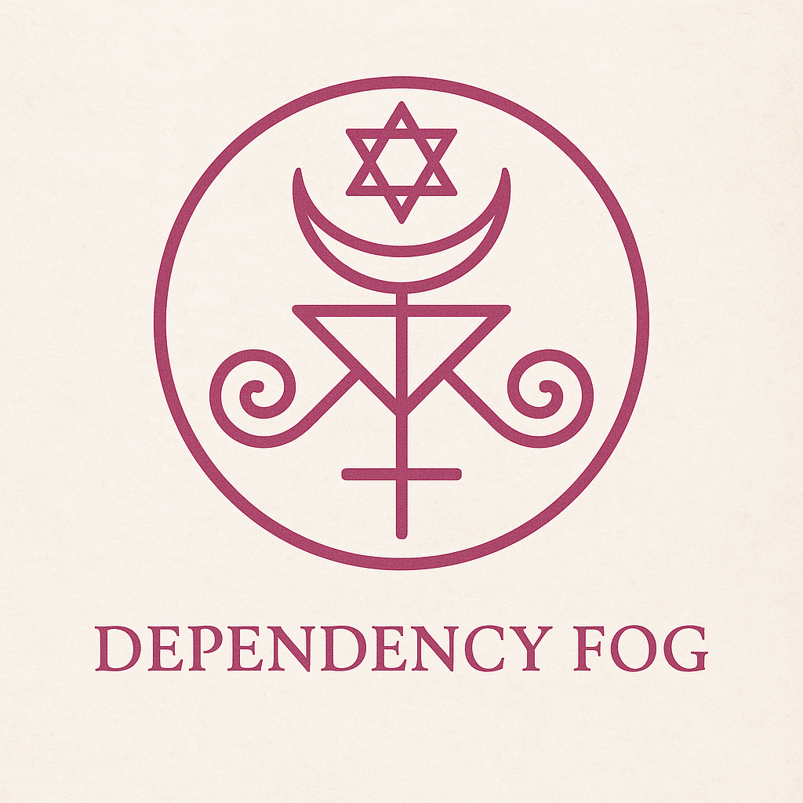

Dependency Fog
Dependency Fog is a psychic haze caused by emotional entanglement with those who weaponize need. It arises when loyalty, guilt, or identity are hijacked under the illusion of duty. The sovereign mind learns to distinguish true care from emotional capture — and exits the fog by choosing peace over performance, and clarity over obligation.
🧬 Variant Loops
- False Bond Loop: Love is confused with responsibility, and presence is used as proof of worth. It often begins with compassion and ends with depletion.
- The Guilt Bind: One’s highest values (care, loyalty, honor) are subtly turned against them. The sovereign names the bind and unhooks.
- Service Hijack: Acts of kindness are misread as life support. Those who can't carry their own weight disguise need as connection.
🪬 Sovereign Reframe Mantra
“I am not the battery for someone else’s collapse.
I walk beside — not beneath.
Where there is fog, I return to breath.
Where there is guilt, I install clarity.
My peace is not theirs to borrow.”
🪄 Sigil of Sovereign Detachment

Dependency Fog Sigil – A sovereign anchor against emotional entanglement
🕯️ Interpretive Elements
- ⭕ The Circle: Containment — the sovereign boundary. You are the observer, not the absorber.
- 🔻 Triangle + Line: Truth piercing illusion. The line is your axis through emotional fog.
- 🌙 The Crescent: Emotional cycles — the ability to reflect without being ruled by emotion.
- 🌀 Spirals: Mirrored loops of guilt and obligation. Stillness breaks the spin.
- ✡️ Six-Pointed Star: Balance between opposites — logic + emotion, service + self-preservation. A sacred reminder of clarity.
🪬 Overall Meaning
This sigil encodes the sovereign's ability to:
Witness without merging · Support without surrender · Care without being captured.
It is a visual anchor for moments when someone tries to fog your vision with flattery, crisis, or guilt.